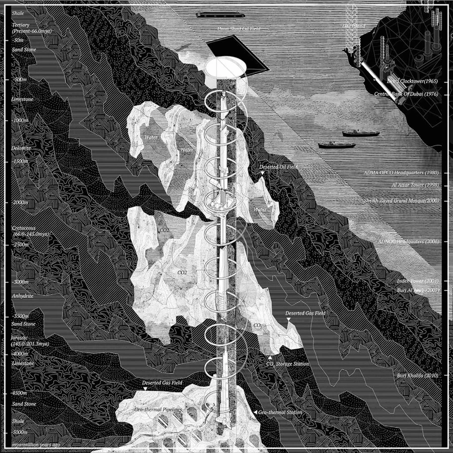
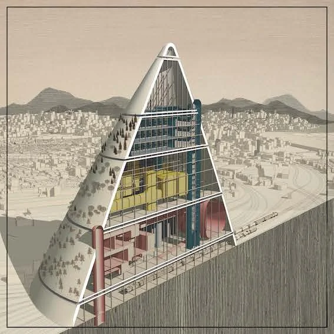
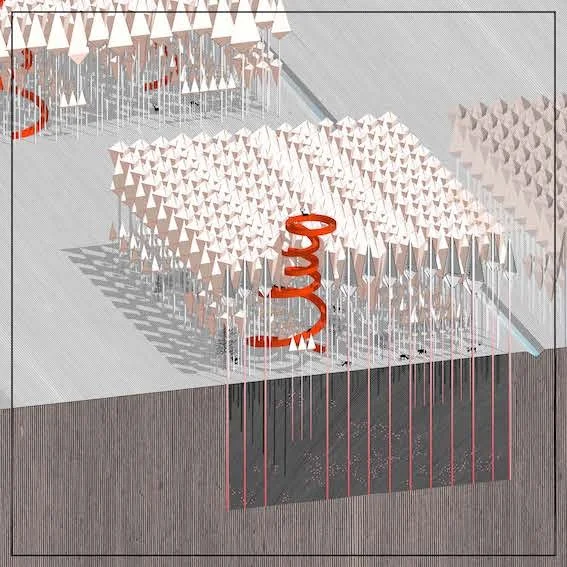
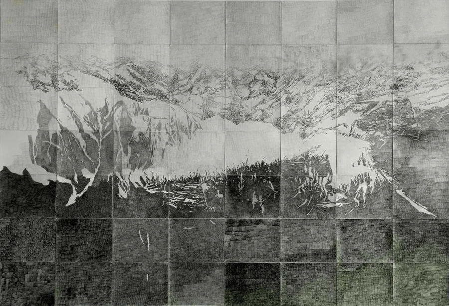
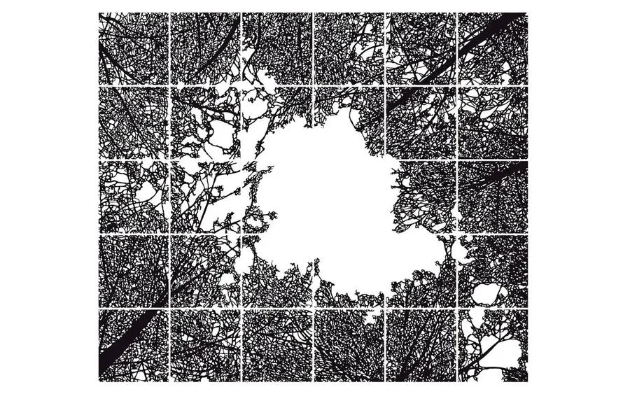
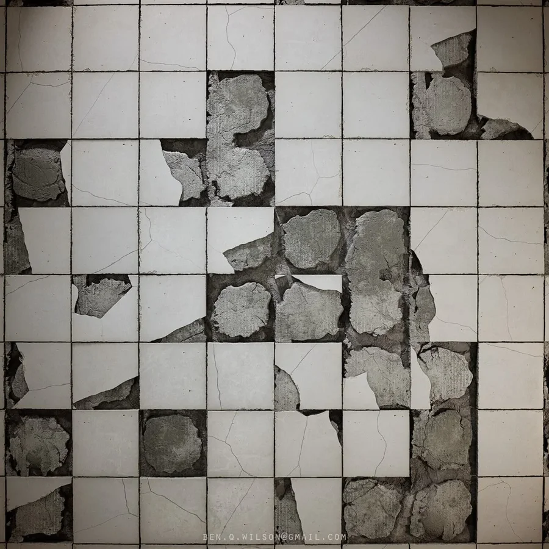
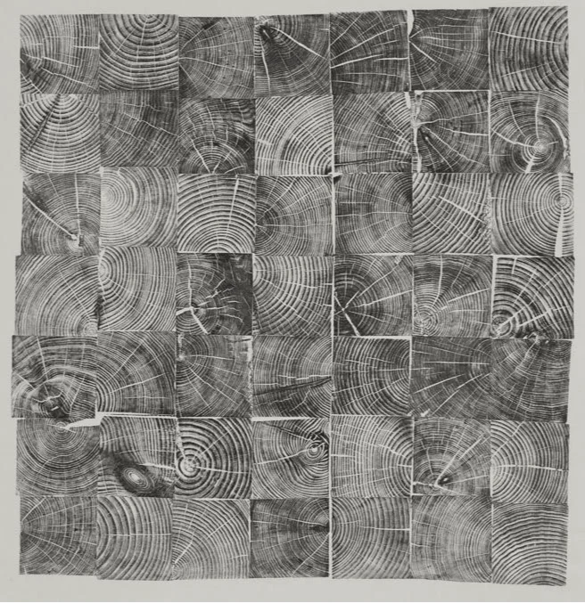
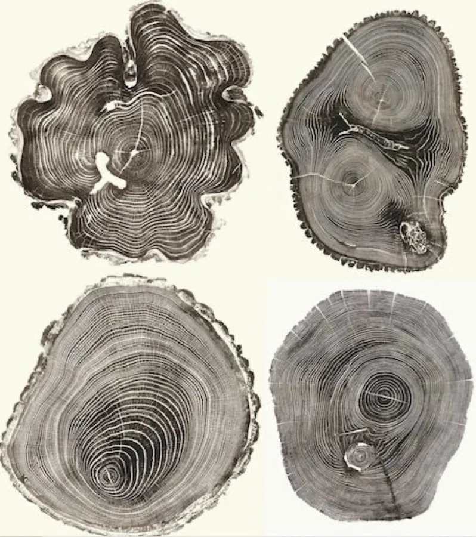
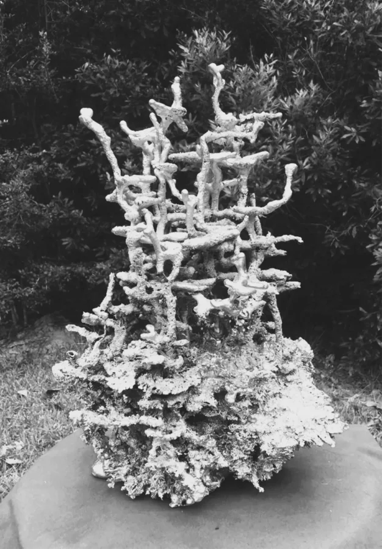

Raina Ghosn, El Hadi Jazairy, After Oil (Das Island, Das Crude), 2016
Design Earth. Inkjet print on canvas.
https://pl.pinterest.com/pin/694469205082029022/

Trash Peaks Seoul Biennale, 2017
Project Team: El Hadi Jazairy + Rania Ghosn Reid Fellenbaum, Victor Lee, Monica Britt Hutton, Beth Savrann
https://pl.pinterest.com/pin/694469205082029022/

Trash Peaks Seoul Biennale, 2017
Project Team: El Hadi Jazairy + Rania Ghosn Reid Fellenbaum, Victor Lee, Monica Britt Hutton, Beth Savrann
https://pl.pinterest.com/pin/694469205082029022/

NATAŠA KOKIĆ Drawing (Untitled) drawing, pencil on paper 230 cm x 400 cm 2011
https://kolekcija.oktobarskisalon.org/en/kolekcija-umetnik/natasa-kokic-en/

JAN HENDRIX | Vectorized drawing | 2015 La Tour Blanche, 2015
Trimmed acrylic Variable sizes
https://janhendrix.com.mx/2016/en/obra/le-tour-blanche/

BEN WILSON, Broken Tiles
https://benqwilson.com/projects/BOaOm

https://pl.pinterest.com/pin/616078424055450395/

https://pl.pinterest.com/pin/694469205082028910/

Sculpture created by an ant hill.
Eclectic Metal Art by Charles.
eclecticmetalart.com
https://pl.pinterest.com/pin/694469205081748028/